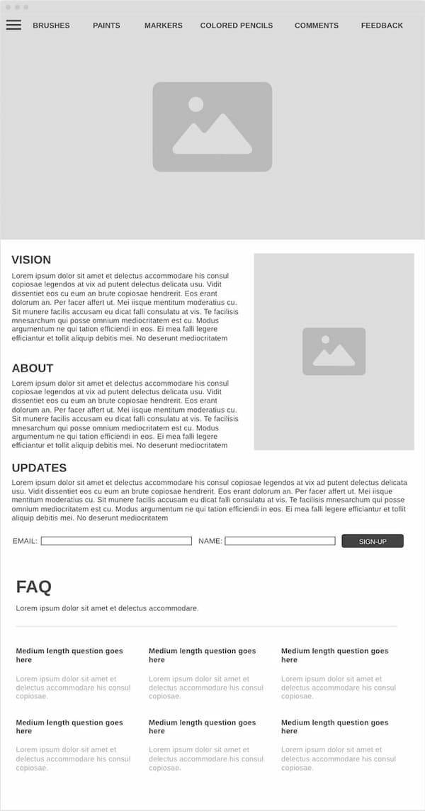
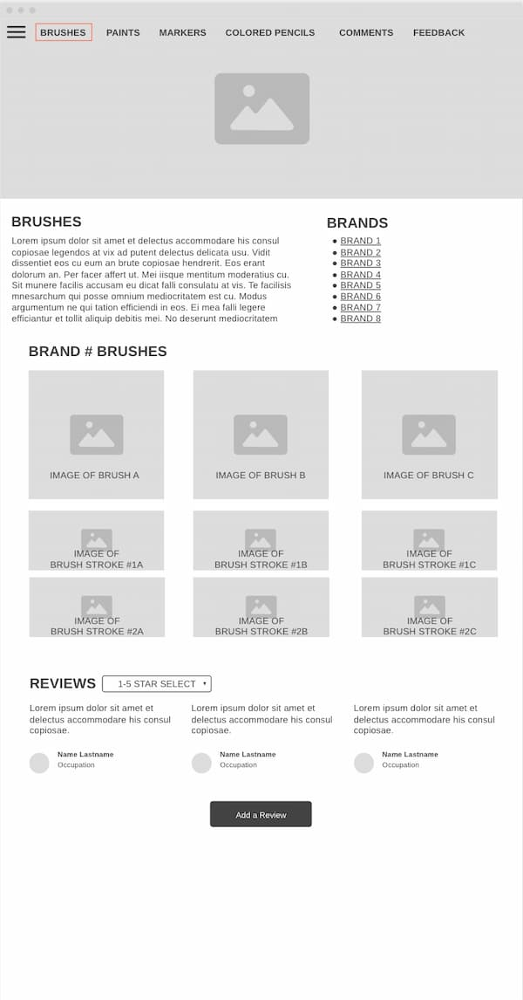
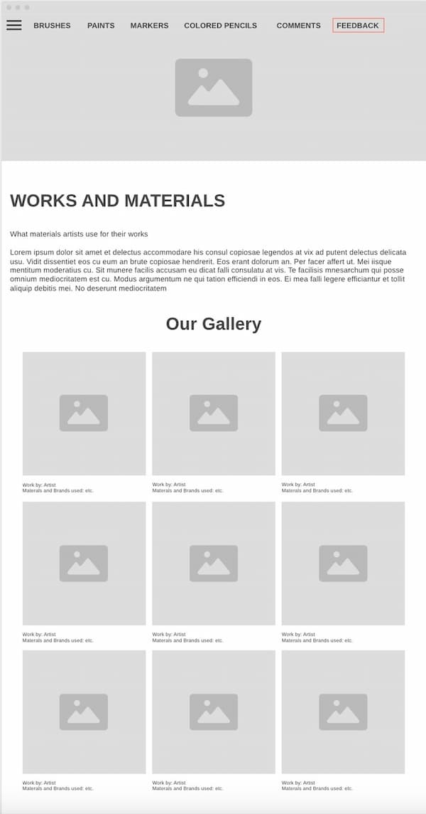
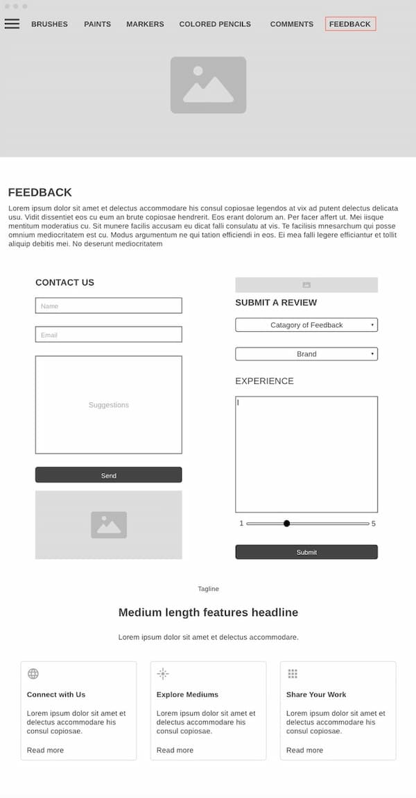

The advantages of sketching are that it’s faster and it’s easier to put down initially. There are also fewer distractions because there are fewer options for how you want to lay out the wireframe (no fonts or colors to worry about). The disadvantages are that it’s harder to plan out the stylistic details, there’s not as much interaction that can happen, and there’s a lack of collaboration options.
Some advantages of making a wireframe on software are more clearly defined lines, fonts, and colors; other advantages include collaboration and interaction. Some disadvantages are that it’s slow and it’s hard to learn all of the different functions of the software quickly.
The best wireframing style for my website would be using a wireframe software. I want to use this form because it will allow it to be cleaner, for the colors to be prototyped, and to allow interaction. I also think that this will help with readability between different viewers because I know it’s easy for me to understand my sketches, but it may not be easy for all audiences. This will also allow for the prototype to be edited more easily. This will work best for my project because it will help me understand the layout of my information and how it will look to the user. This helps because it communicates the material pages across all of the different categories through the brushes page because the layout will be the same, but the pictures and information about the materials will be different.
Home page
Brushes page
Gallery page
Feedback page
